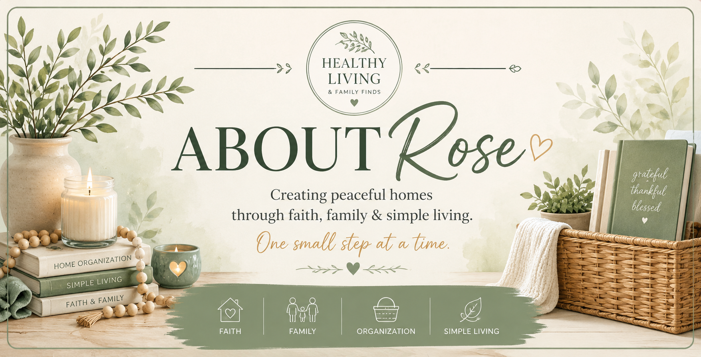

Welcome, I'm Rose! 💚
Welcome to Healthy Living & Family Finds. I'm so happy you're here!
I'm a Christian wife and mom who loves finding products that make everyday life healthier, simpler, and more organized. Whether it's a helpful kitchen gadget, school supplies, home organization ideas, or faith-inspired resources, I enjoy sharing products that truly make life easier.
Every recommendation on this website is carefully chosen with families in mind. My goal isn't simply to share products—it's to help busy families discover useful, trustworthy items that bring more peace and joy into everyday life.
Why I Started This Website
I wanted one place where I could share products I genuinely enjoy and would confidently recommend to friends and family. Instead of spending hours searching online, I hope this website helps you discover quality products that save time, encourage healthy living, and support your home.
My Heart
My faith is at the center of everything I do. I believe that even the smallest daily moments—preparing meals, caring for our homes, raising children, and serving others—can glorify God. My prayer is that this little corner of the internet becomes a helpful resource for families looking for practical, encouraging, and faith-filled recommendations.
Thank you so much for visiting. I truly appreciate your support, and I hope you enjoy exploring my favorite finds!
Rose 🌿